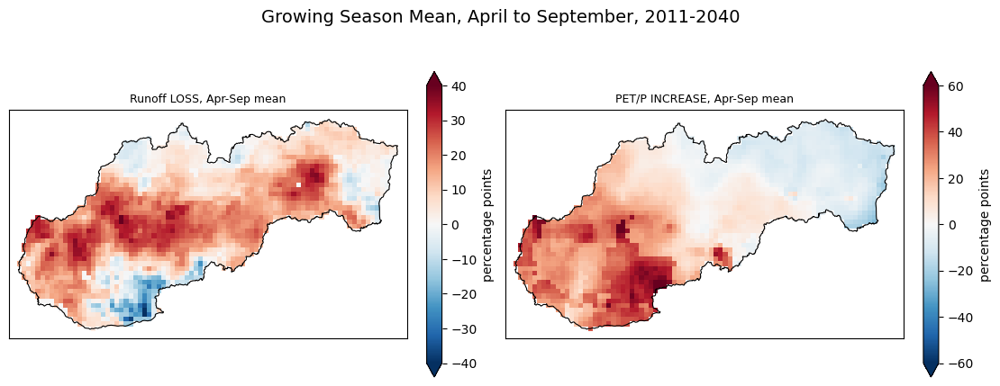
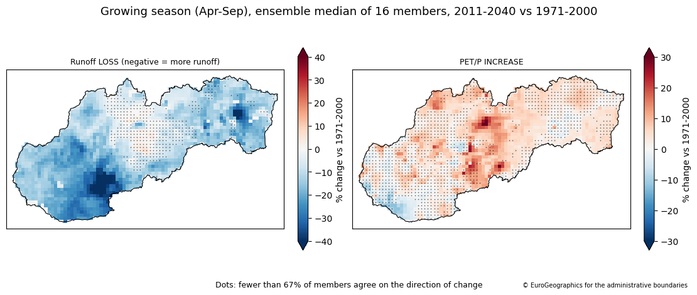
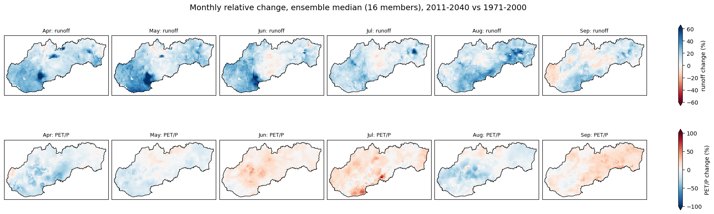
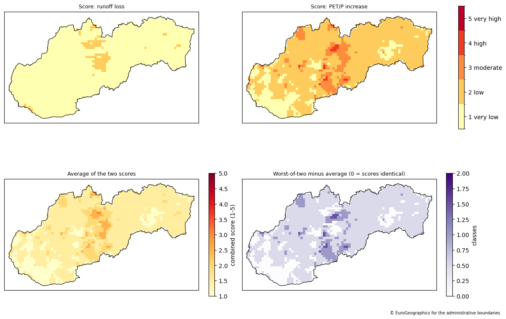

The short answer: not in the near term under a moderate emissions scenario (RCP4.5)
Across 16 model runs, growing-season (April–September) runoff is projected to increase over most of Slovakia by 2011–2040, compared with 1971–2000. Evaporative demand relative to rainfall changes only a little, and the models don't agree on its direction.
Why one model wasn't enough
I first built the pipeline on a single climate-model run. The resulting maps were striking: falling runoff and a sharp rise in May evaporative demand. When I expanded to the full ensemble, that run turned out to be the driest of all 16. The ensemble as a whole points the opposite way for runoff.
For near-term projections, differences between climate models are larger than the climate signal itself. Reporting how far the models agree matters as much as the median map.


Results
Month by month

The whole growing season
Indicator classes
Each metric is classified from very low (1) to very high (5) water stress. The two classes are then combined in two ways: their average, and the worse of the two.

| Class | Runoff: % of area | PET/P: % of area | PET/P: class agreement |
|---|---|---|---|
| 1 very low | 94.8 | 16.1 | 59% |
| 2 low | 5.2 | 73.1 | 29% |
| 3 moderate | 0.0 | 9.9 | 25% |
| 4 high | 0.0 | 0.9 | 31% |
| 5 very high | 0.0 | 0.0 | – |
Class agreement is the share of models that would put a cell in the same class as the ensemble median. For PET/P it is typically only about a third, so the classes are indicative rather than precise.
How it works
- Download an ensemble. 8 EURO-CORDEX climate simulations, each driving 2 hydrological models (E-HYPEgrid and VIC-WUR), from the Copernicus Climate Data Store: 16 members on a 5 km grid.
- Validate. Check that every file shares the same grid, month order and units before stacking them.
- Clip to Slovakia. Reproject to an equal-area grid (EPSG:3035) and mask to the national boundary.
- Quality-check extremes. Flag implausibly large percentage changes, which come from tiny baselines, and test whether they affect the results. They don't.
- Summarise the ensemble. Take the median of the 16 members, and record how many agree on the direction of change.
- Classify and report confidence. Classify into five classes, with robustness and class agreement for every cell.
- Export. Write results to NetCDF and CSV in a format designed for comparing emissions scenarios.
The two metrics
- Runoff: water reaching streams and rivers, a proxy for water availability. Less runoff = drier.
- PET/P: potential evapotranspiration divided by precipitation (the inverse of UNEP's aridity index). Higher = drier.
Limitations
This is a demonstration of method, not a decision-ready risk product.
- Relative, not absolute. A 10% change can be large or small depending on the baseline, and a "low" class can still be a dry place today.
- Drying only. The classes don't distinguish wetter conditions from no change.
- 30-year averages hide individual drought years, which matter most for farming.
- Hazard, not risk. There is no exposure layer (which crops grow where) or vulnerability layer yet.
- Scope. One scenario (RCP 4.5), one period, models weighted equally although several share a global model.
Next steps
- Compare with RCP 8.5 and later periods (2041–2070)
- A two-directional indicator that also classifies wetter conditions
- An agricultural exposure layer
- A catchment-level version